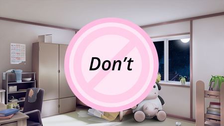

Don't
Sobre o que é esse mod? Depressão, sonhos e amizade? Nota: Certifique-se de salvar com frequência, um bom momento para salvar, eu descobri, é quando toda vez que a tela ficar preta, salve quando isso acontecer. Nota 2:Não tente vasculhar os arquivos, não há nada para encontrar, pelo menos intencionalmente, e não, não sou eu tentando dar uma dica ou algo assim, não perca seu tempo.
⬇ Download